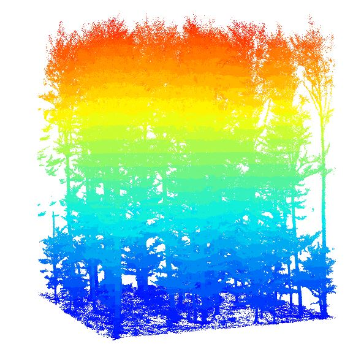

Pre-processing of TLS or MLS point clouds
For extracting information on tree level from close-range laser scanning (TLS or MLS), you can use e.g. the TreeLS package. We will show a workflow on how to implement the output of TreeLS within TreeCompR.
First, load the .las data, normalize the height, sample the point cloud, estimate tree occurrence regions, classify stem points and estimate the diameter and height of each individual tree.
file <- "path/to/file"
tls <- readTLS(file)
tls_norm <- tlsNormalize(tls, keep_ground = F)
thin <- tlsSample(tls_norm, smp.voxelize(0.01))
map <- treeMap(thin, map.hough(min_density = 0.1), 0)
tls_t <- treePoints(tls_norm, map, trp.crop())
tls_stem <- stemPoints(tls_t, stm.hough())
inv <- tlsInventory(tls_stem, d_method=shapeFit(shape='circle',
algorithm = 'ransac'))
inv$dbh <- (inv$Radius * 2)
head(inv)
#> TreeID X Y Radius Error H h_radius dbh
#> 1: 1 12.039168 3.3932670 0.44487714 0.0008539910 24.72817 1.3 0.88975428
#> 2: 2 11.930523 2.3763304 0.13060774 0.0005245504 24.98053 1.3 0.26121547
#> 3: 3 7.424479 -4.9563841 0.09487961 0.0003207291 23.75091 1.3 0.18975922
#> 4: 4 7.144895 5.8221160 0.49786606 0.0004321285 24.05617 1.3 0.99573212
#> 5: 5 7.085920 0.8309956 0.08171301 0.0002994584 24.07538 1.3 0.16342603
#> 6: 6 7.183327 5.2498770 0.04965389 0.0004974247 23.94043 1.3 0.09930777 
Use extracted tree information within TreeCompR
To ensure that the inventory data is assigned correctly, check the
data and make sure that you specify the units dbh and height if they
differ from the default, which is cm for dbh and m for height. Use
read_inv() to validate your inventory data within
TreeCompR. To visually check for which trees the CIs will
be quantified depending on the chosen search radius, you can use
define_target() and plot_target(). We
recommend to use target_source = "buff_edge" to
automatically calculate the CI for all trees in the plot except for
those that are less than one search radius away from the forest edge.
This is specifically important for TLS/MLS data, since these data types
usually only cover small forest plots rather than whole forests.
inventory <- read_inv(inv_source = inv, dbh_unit = "m", height_unit = "m")
targets <- define_target(inv = inventory, target_source = "buff_edge", radius = 10)
plot_target(targets)
compete_inv(inventory, target_source = "buff_edge", radius = 7,
method = "all_methods")
#>---------------------------------------------------------------
#> 'target_inv' class inventory dataset with defined target trees:
#> collection of 31 observations
#> Source of target trees: buffer around edge
#> ---------------------------------------------------------------
#> id x y dbh height target
#> 1 1 12.039 3.393 0.89 24.728 FALSE
#> 2 2 11.931 2.376 0.261 24.981 FALSE
#> 3 3 7.424 -4.956 0.19 23.751 FALSE
#> ... ... ... ... ... ...
#> 29 35 -6.407 -4.719 0.06 19.791 FALSE
#> 30 36 -7.484 -7.635 0.216 22.478 FALSE
#> 31 38 -5.287 1.051 0.06 22.923 FALSEUse cases
## If you focus on a specific CI, e.g. the widely used Hegyi-Index,
## you can choose it within methods = "CI_Hegyi".
#> compete_inv(inventory, target_source = "buff_edge", radius = 7,
#> method = "CI_Hegyi")
#> The following columns were used to create the inventory dataset:
#> id --- TreeID
#> x --- X
#> y --- Y
#> dbh --- dbh
#> height --- H
#>
#> ---------------------------------------------------------------------
#> 'compete_inv' class inventory with distance-based competition indices
#> Collection of data for 1 target and 30 edge trees.
#> Source of target trees: buffer around edge Search radius: 7
#> ---------------------------------------------------------------------
#> id ... dbh height CI_Hegyi CI_Braathe CI_RK1 CI_RK2 CI_RK3 CI_RK4
#> 18 20 ... 0.25 23.9 1.96 2.07 0.49 0.499 4.1 13.2
## If you have a tree height column that is not automatically recognized within
## our validation of input data, you can set it manually:
# in read_inv():
inventory <- read_inv(inv_source = inventory, height = "h_column_name")
# in compete_inv():
compete_inv(inventory, target_source = "buff_edge", radius = 10,
height = "h_column_name", method = "CI_Hegyi")
## If your dbh is specified in cm, just change the dbh_unit to "cm"
compete_inv(inventory, target_source = "buff_edge", radius = 10,
dbh_unit = "cm", method = "CI_Hegyi")
## If you want to keep a column with certain user defined IDs for the trees,
## and it is not recognized, specify it with id = "name_column"
inventory <- read_inv(inv_source = inventory, id = "ID_user")